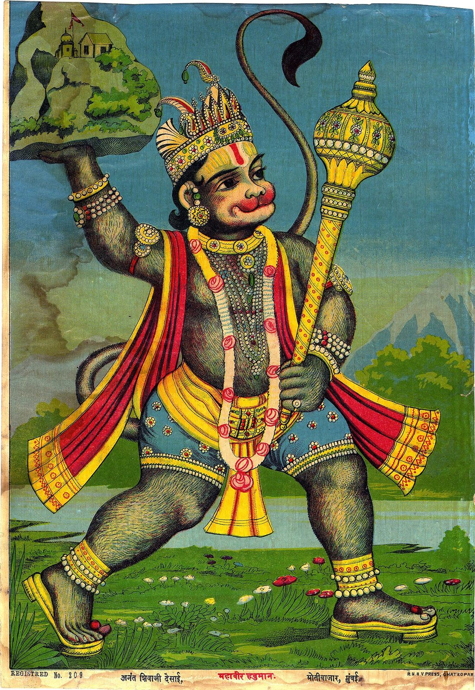

"Buddhir Balam Yasho Dhairyam Nirbhayatvam Arogata"
Every diya you light here is complete, just as it is. Sharing or supporting Daily Darshan simply helps this quiet space reach more people — never required, always felt. 🙏
Tap once for each repetition of the mantra. A full mala is 108 chants — your count is saved on this device and renews with each new day.
Hanuman is the monkey-faced son of Vayu, the wind god, and one of the central figures of the Ramayana. His devotion to Lord Rama is considered the model of selfless service — he crossed oceans, carried mountains, and burned a kingdom to ash in service of dharma, asking nothing for himself in return.
Devotees turn to Hanuman in moments that call for courage: before an exam, a difficult conversation, a long journey, or simply a hard day. He is known as Sankat Mochan, remover of troubles, and is traditionally worshipped on Tuesdays and Saturdays.
Born to the celestial nymph Anjana and Kesari, a vanara chieftain, Hanuman was blessed by Vayu, the god of wind, who is considered his divine father. As a child, Hanuman mistook the sun for a ripe fruit and leaped toward it — a story that speaks to his boundless energy and fearlessness from birth. The gods, alarmed, struck him down, and Vayu withdrew from the world in grief until Hanuman was restored and granted boons of strength, invincibility, and wisdom by Brahma, Shiva, and Indra.
It was in the service of Lord Rama that Hanuman's greatness fully revealed itself. When Sita, Rama's wife, was abducted by the demon king Ravana and taken to Lanka, it was Hanuman who leaped across the ocean, located Sita in the Ashoka grove, and brought back news that gave Rama's forces hope. During the great battle, when Rama's brother Lakshmana lay gravely wounded and only the Sanjeevani herb could save him, Hanuman flew to the Himalayas — and, unable to identify the correct plant, lifted the entire mountain and carried it back. This act of devotion under impossible pressure remains one of the most beloved moments in all of Hindu mythology.
The Hanuman Chalisa is a forty-verse devotional poem composed by the 16th-century poet-saint Tulsidas, written in the Awadhi dialect of Hindi. It remains one of the most widely recited texts in Hinduism, chanted by millions every single day. The word chalisa means forty in Hindi, corresponding to the poem's forty verses. Each verse distills a quality of Hanuman — his strength, his knowledge, his unwavering faith — and chanting the complete poem is considered a complete act of worship in itself.
Tulsidas himself, who also composed the Ramcharitmanas, is said to have encountered Hanuman directly as a result of his devotion. The Chalisa he wrote carries within it both the story of Hanuman and a living invocation: devotees report chanting it in fear, illness, grief, and uncertainty, and finding in the repetition a steadiness that did not depend on circumstances changing.
Hanuman is typically depicted with an orange or red body — orange associated with celibacy, renunciation, and the fire of devotion, and red with the sindoor (vermilion) that devotees apply to his image as a mark of love. He is shown carrying a gada (mace) in one hand and the Sanjeevani mountain in the other, or sometimes tearing open his chest to reveal Rama and Sita residing in his heart — the definitive image of bhakti, the idea that the beloved deity literally lives inside the devotee.
His vehicle is none — Hanuman needs no mount. He flies under his own power, a reminder that true devotion carries you where you need to go.
Hanuman is prayed to before physical challenges, competitive exams, surgery, legal proceedings, travel over long distances, and any situation where courage is the primary need. He is also considered especially protective of those who feel threatened by evil spirits or negative energies — temples dedicated to him often stand at crossroads and boundaries, places where the world's edges meet. Tuesday and Saturday are his sacred days, and many devotees observe a fast on these days, eating only one meal or abstaining from certain foods as an act of discipline in his honour.
Lord Shiva · Lord Ganesha · Goddess Lakshmi · Lord Krishna · Goddess Durga · Goddess Saraswati · Lord Rama · Sai Baba